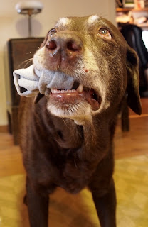

Nuppu
Nuppu oli pitkäaikainen kumppani. Sirpun blogissa kerrotaan yhteiseloa kertyneen yli 15 vuotta. Metsäpolut, aamulenkit, autoreissut ja pienet arjen kommellukset toistuvat kirjoituksissa. Nupun tie päättyi koirataivaaseen tammikuussa 2016.